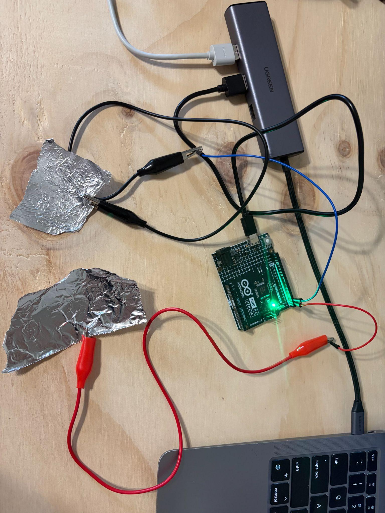
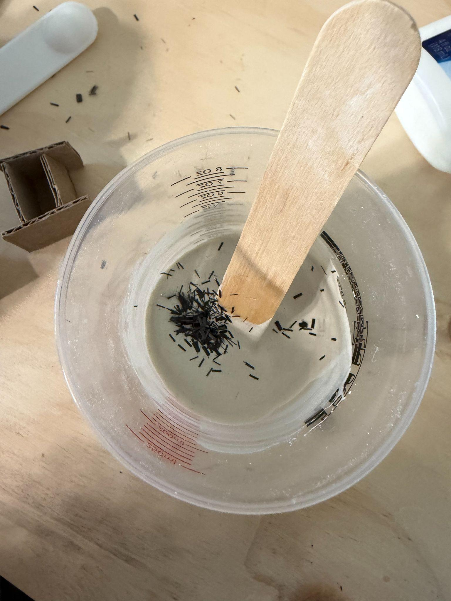
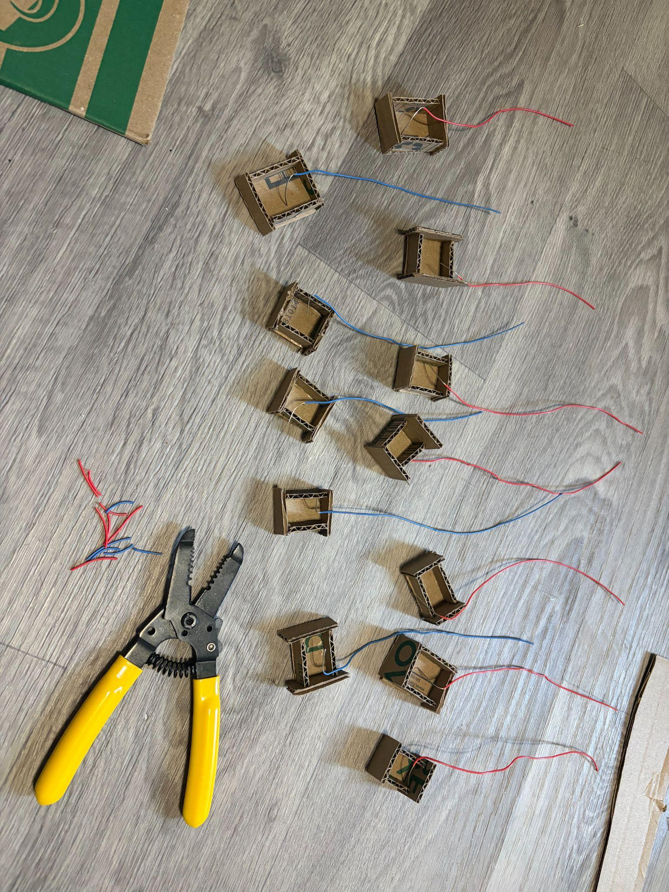
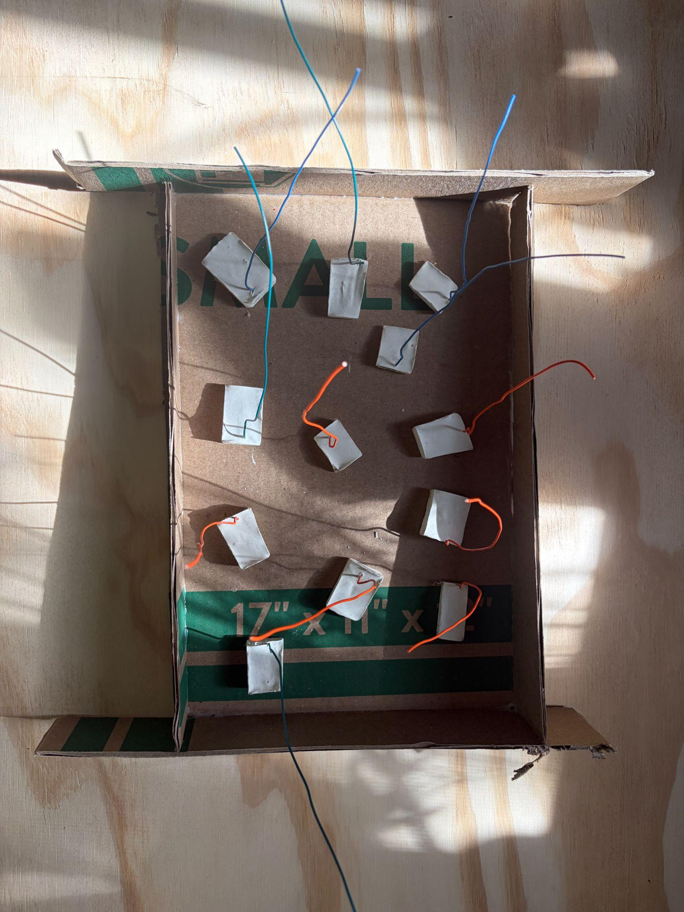
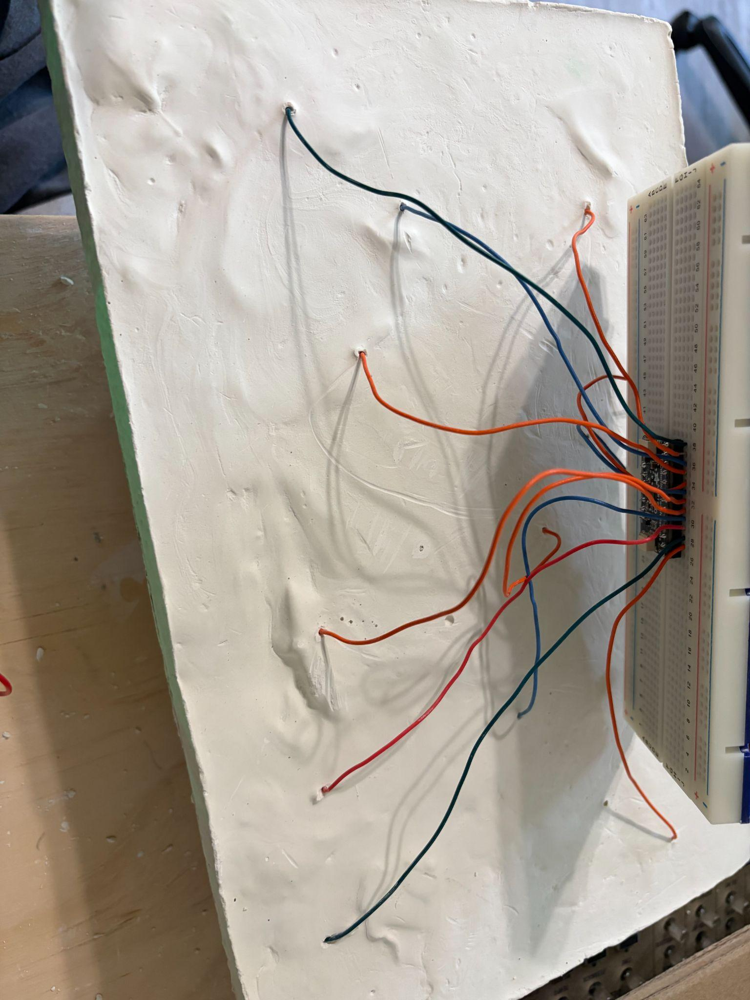
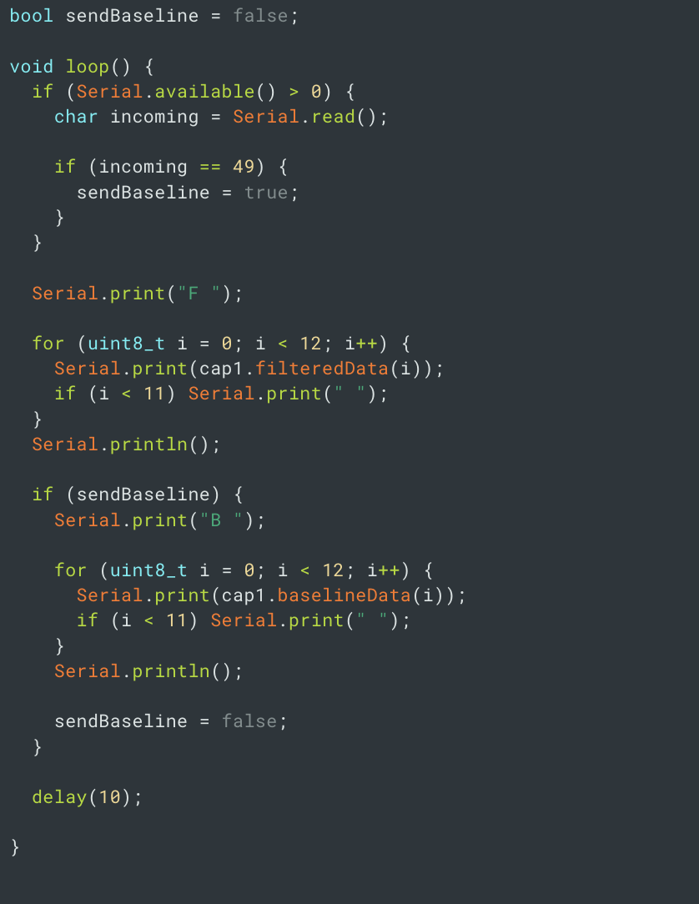
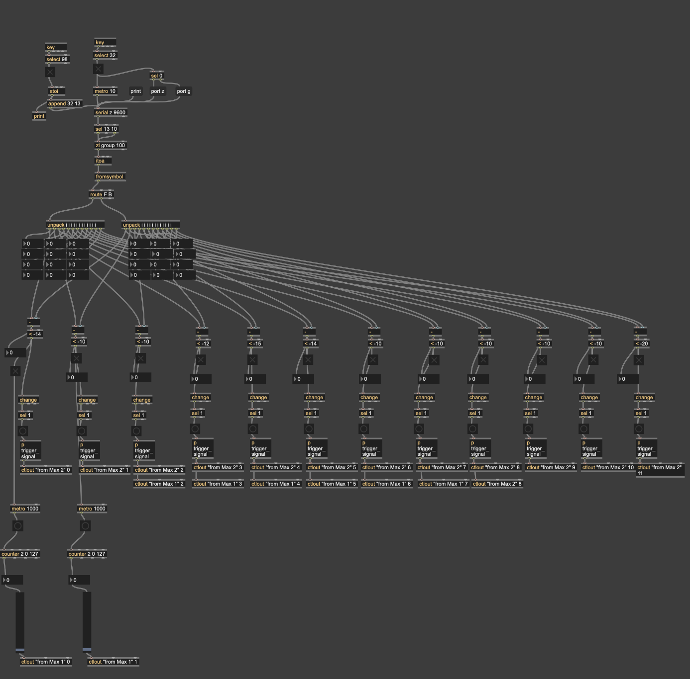
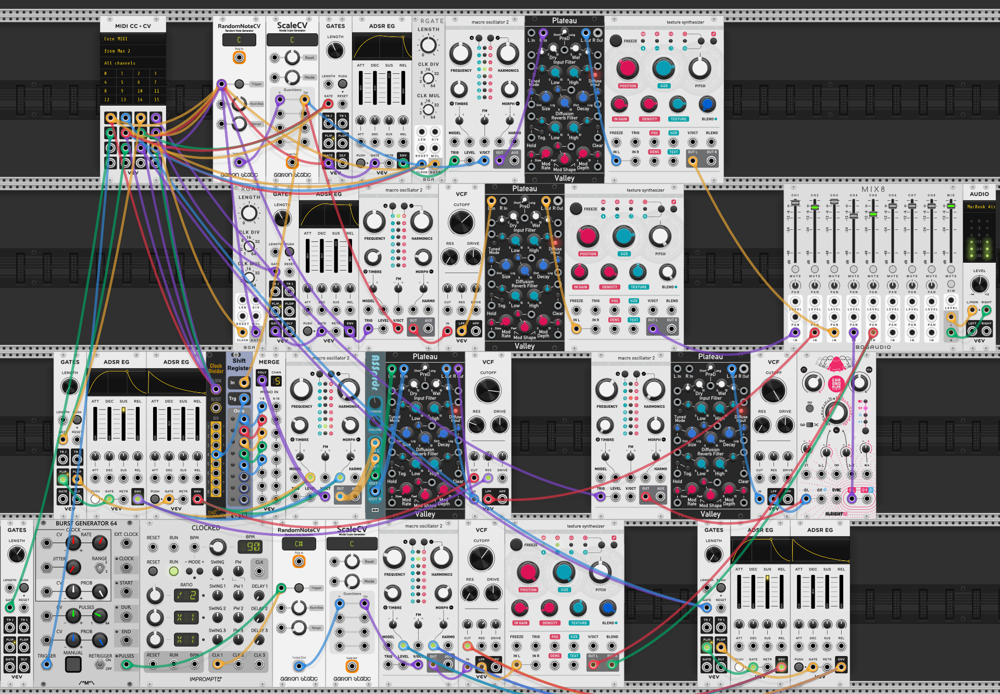

( 001 )
: plaster synthesis :
a touch-based music interaction device used to
control digital modular systems built from
handmade conductive plaster
: intentions :
generate soft sounds from human interaction with a hard, dense
material
experiment with conductivity and invisible embedded sensors
convert electrical signals into meaningful sound
design my own new musical interface
: materials :
| name | price | supplier |
|---|---|---|
| mpr121 | $8 | adafruit |
| plaster of paris | $10 | blick |
| 1/8" precision chopped carbon fiber | $20 | omniaproducts |
| wire | free if u take it from somewhere else | idk maybe ur old headphones. or any electronics store ever |

: phase001 : testing
this project starts with one basic idea: a human touches something physically, and something happens digitally. in order to make this happen, i used a capacitive touch sensor: the mpr121. the mpr121 has 12 pins for sensing touch. this works either when a pin is touched directly or, more usefully, when a pin is connected via wire to a conductive material. i started by testing this functionality with a widely available conductor: tinfoil.

: phase002 : mixing
i had this idea in mind of a project that used a very tactile.. substantial.. textural.. gritty.. dense.. very solid material for the base. that doesn't really describe most conductive materials that i could've used in the way i wanted for this. luckily, i came across a single post about adding conductive material to a non-conductive medium that would work perfectly: plaster. for this step of the process, i mixed up a batch of plaster as normal, then added the smallest bits of chopped carbon fiber i could find. there was a certain balance i had to find with how much to use, but it wasn't all that difficult. a pinch was all it took.

: phase003 : molding
in order to create conductive 'hot spots' where human touch is tracked, i had to create each button separately. as far as i was concerned, the less precise and uniform the body of this project turned out the better. so i made cardboard molds with some leftover moving boxes and hot glue. to capture touch data from these sensors, i set open ends of wire into each mold so that when i poured the conductive plaster mix over it, they would be embedded inside.

: phase004 : prototyping
after each sensor was made, it needed to be encased in the main body. again another poorly made mold was put to use. i removed each button from its mold and laid them out at the bottom of this new one. once i was happy enough with the arrangement, i poured regular plaster over top. this way, all of the sensors could live in one big body because there's no conductive material between them to cause any cross talk. each sensor could act on its own.

: phase005 : connecting
yay she's born. to bring the sensors to life, i just connected each jutting wire to an input on the mpr121. one important note here is that nothing will work properly if the plaster is still wet (because wet plaster is conductive, so it'd just act as one big sensor basically). i probably had my plaster to water ratio wrong because it took mine like 5 days to dry enough to get accurate readings. while waiting for that, i considered how the texture/feel of the piece could invite touch, and specifically how i could guide touch in the right places (the sensors). there are a bunch of ways to add texture to plaster, but a lot of them required the use of tools i didn't want to buy. for example, a lot of people used sponges to add texture, so i just crumpled up some paper towel, dipped it in wet plaster, dappled it over the non-conductive plaster, sanded it a little when it dried, and that did the trick.

: phase006 : software - arduino
while all the software looks confusing, its function was really pretty straightforward. there's a mpr121 arduino library that includes examples that i used as a starting point for getting the values from the sensors. the way the mpr121 works is it samples the average values from the sensors and then when it detects values that are past a certain threshold away from these averages, it considers that sensor to be touched. i found this to be really finicky (read: it wasn't detecting touch properly at all), so i essentially just recreated the functionality myself. my solution was: send the current data from each sensor to max msp via serial communication every 10ms. if it receives a message 'b' back, then it sends the 'average/baseline' data once. to differentiate between constant values and average values, constant values were sent with a label "F" and average with a label "B".

: phase007 : software - max msp
max msp's job was to get the data from the arduino, parse/handle it, then send it to vcv rack in a way it can use. a good bulk of what is shown here is just basic arduino -> max serial communication stuff, but i did add some unique functionality. firstly, i set it up where if you press the 'B' key on your computer, it tells arduino to send over the average sensor readings. this functions as a recalibration. touch isn't being sensed properly? press b and it'll reset itself. next is where i remade the actual touch sensing - comparing the average readings from the current readings. each button had a different threshold that seemed to work (surely that has nothing to do with my imprecise methods for adding the carbon fiber) so i kinda just messed with these numbers until it worked. then, i had to turn this data into something vcv rack could use. i set up two types of interactions (but more are definitely possible!): one where touch is detected and it sends a super quick trigger to vcv (a trigger literally meaning - do something now! think like pressing a button) and another where holding down on a sensor causes a slider to rise and fall (think like turning volume up and down). then i sent the triggers or slider values to vcv rack with a ctlout object.

: phase008 : software - vcv rack
lol. this is my butt ugly modular patch. the important part here is the midi cc -> cv module. this is how the data from max enters the vcv world. at this point, the ctlout object is the connection guide. in max, i set up a slider that was sent to vcv rack with a ctlout object that says "from Max 1" 0. that means, if i have a midi cc -> cv module where max 1 is the midi device, port 0 (the first one) gets the value of that slider. i connect the rest of the sliders or triggers in the same fashion. from there, i made whatever i wanted. i set up sliders that controlled volume. i set up triggers that connected to burst generators that randomized notes. others triggered sounds that were mangled with granular synthesis techniques. it doesn't matter. what i have now is a series of tangible touch sensors whose data is collected, manipulated, and assigned to parameters in whatever way i want. a fully customizable machine instrument embodying an infinite digital world of sound. <3. so cute.